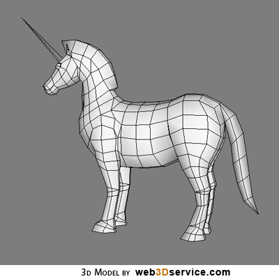

HAPPY Birthday
Openstack
#OSATX 10 July 2014
Solum
How openstack stopped worrying about Docker and learned to love it.
Created by Paul Czarkowski / @pczarkowski
Docker
What even is ?
Docker
What even is ?
- Process Isolation
- Uses linux kernel tooling ( cgroups, namespaces, etc)
- Shareable Artifacts - Images / Docker Hub
- Write Once, Run Anywhere.
- Process/Application Centric
Openstack
Hopefully you know this one!
Chef for Openstack
Docker + Openstack
- Nova-Docker Driver
- Docker Heat Plugin
- Dockenstack
- CoreOS
- libswarm ?
Openstack has 99 problems
and Docker aint one of them.
History of the Nova-Docker Driver
- May 2013 - Initial Implementation by Sam Alba
- Sept 2013 - Merged into Nova
- Oct 2013 - Havana Released w/ Docker
- March 2014 - Nova Removes Docker Driver (moved to own repo)
- May 2014 - Docker, Rackspace, Redhat, others form Openstack Containers Team.
- Ongoing - Active community improving Nova Docker driver.
Nova-Docker Driver Features
- Treat Docker just like any other hypervisor
- Scheduling
- Images
- Fast instantiation! ( some overhead in scheduling, but still v. fast)
- Native experience ( but painful initial install )
$ nova boot --image=cirros:latest --flavor=2 my_docker - Openstack community doesn't know what to do with it.
History of the Docker Heat Plugin
- Oct 2013 - Initial implementation by Sam Alba
- Dec 2013 - Merged into Heat.
- May 2014 - Icehouse Released w/ Docker Heat Plugin.
Docker Heat Plugin Features
- Treat docker containers as heat resources
- Manual placement
- Heat has to be able to talk to docker API on VM
- still somewhat painful install
Developers are...

and applications are their power.
Openstack - VM Centric
Still about infrastructure.
Still need ops to manage VMs and Operational tasks.
Where is the developer/user success story ?
Is focus now on chasing long tail of enterprise virtualization ?
Others - Application Centric
Docker, Kubernates, Openshift, Mesos, CoreOS, CloudFoundry, Deis, Flynn, AWS, etc
VMs are simply infrastructure, irrelevent if not completely unecessary.
The game has changed
Solum
An Application Centric Openstack.
Solum
Whales and Unicorns working together to create...
Infrastructure as a Service ++
Solum - Project Goals
Developer Productivity
- Application Lifecycle Management (dev, test, stage, prod)
- CI/CD with automated deployment
- Integration with IDEs
- Manage Services ( Database, Messaging, etc )
Solum - Project Goals
Application Portability
- export to other Openstack clouds
- portability between private & public clouds
- portability via standard formats ( Docker,
KVM)
Solum - Key Tenets
Community Driven
- Designed in the open.
- Opensourced under Apache 2.0
- Mirror Openstack Governance and Contribution models.
- Stackforge, Gerrit, Launchpad, IRC, etc.
Solum - Key Tenets
Openstack Native Design
- Leverage existing projects ( Nova, Heat, Glance, Trove, etc)
- multi-tenancy by default
- Put functionality where it belongs ( contribute to other openstack projects )
- Provide full access to underlying Systems
Solum - Icehouse
- VM (dib+kvm) or Docker (nova-docker)
- Define Application (Planfile)
- Take source from github, turn into running Application.
- Heroku Buildpacks
- Source to running application in seconds!
Solum - Juno
- VM (coreos+docker) or Docker (nova-docker)
- Define Application (Planfile)
- Take source from github, turn into running Application.
- Heroku Buildpacks, Dockerfile, Custom!
- CI - Unit Testing
- Workflow ( Mistral )
- Services - Load Balancing, MySQL DB, Messaging
Why not just run <insert PAAS here> on Openstack?
<insert PAAS here> features
- Scalable Design
- Orchestration and Scheduling
- Services: Database, Messaging, Hadoop
- Identity Management
- Health monitoring and Auto healing
- Application build and Deploy
Openstack features
- Scalable Design
- Orchestration and Scheduling
- Services: Database, Messaging, Hadoop
- Identity Management
- Health monitoring and Auto healing
- Application build and Deploy [Solum]
Why not just run <insert PAAS here> on Openstack?
Don't Repeat Yourself!
Distributed Systems are hard to run. Why run two?